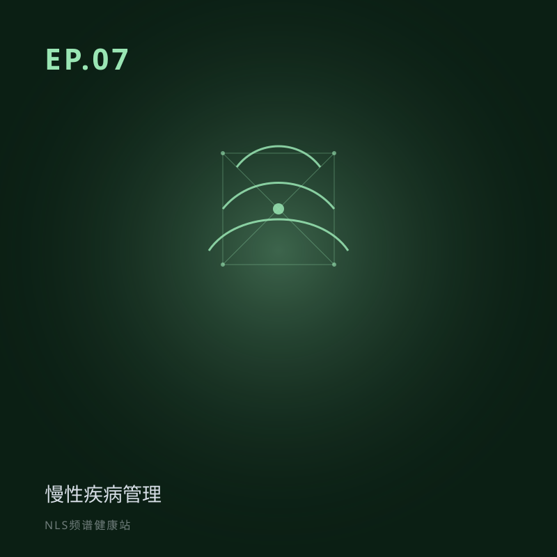

EP.07 慢性疾病管理：从「治已病」到「管健康」
所属专题：临床与管理：用在哪
慢性病不是治一次就好的，是一辈子的事。本期聊 NLS 怎么帮我们把慢病「长期管起来」——四个字：早、动、整、个。从骨关节炎早于 X 光发现病变，到同病不同治的个体化案例，再到诚实的边界。
慢性疾病管理：从「治已病」到「管健康」。用早、动、整、个四个字讲长期管理视角，覆盖骨关节炎早检、同病不同治等案例，并说明不能替代药物与生活方式干预。关键词：慢性病管理、早期发现、个体化、长期监测。
分段要点
-
00:00开场：慢病是一辈子的事 传统慢病管理三个痛点。
-
08:00早：更早看见 骨关节炎灵敏度对比；微小囊肿早检。
-
16:00动、整、个 定期复检看趋势；多维整体；同病不同治。
-
28:00诚实边界 抗衰证据弱；不能替代药物和生活方式。
#慢性病#慢病管理#早期发现#个体化#长期监测
阅读完整文字稿（小乐 / 小思对话全文）